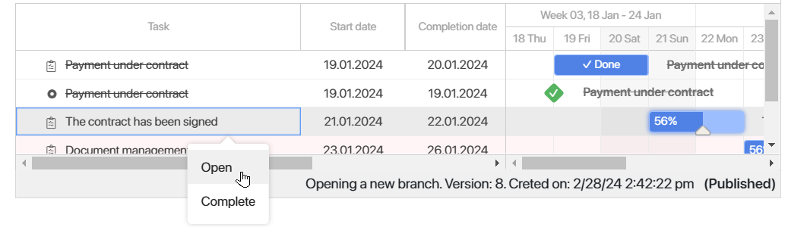
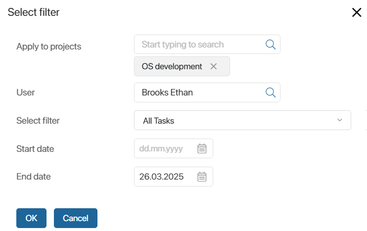
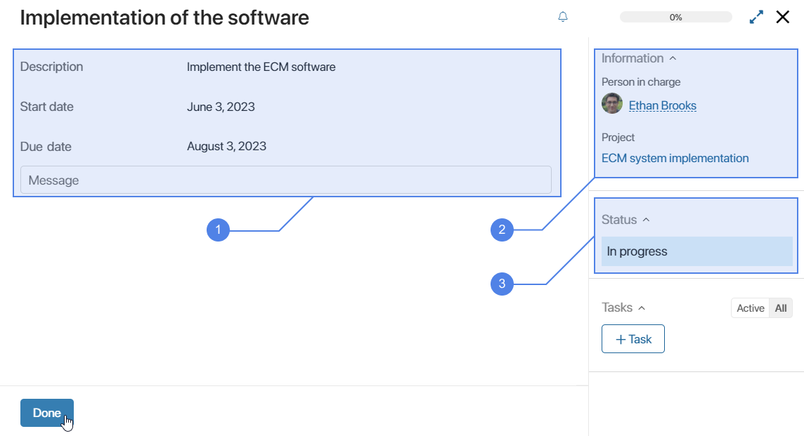
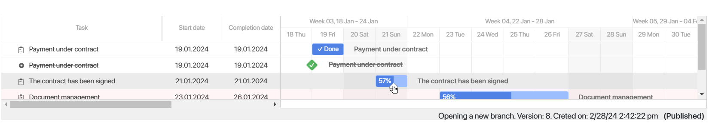

Once the plan has been published, the task executor and the employee with the right to edit the plan can view it on the project page on the Project Schedule tab. To do this, hover the cursor over the task name, click on the three dots, and select Open.

Here you can also:
- Change the task progress.
- Complete or reopen tasks of the Task and Milestones types.
- View tasks of the Process and Stage Task types. A task with the Process type will be automatically executed on the date specified when creating this task. A Stage Task will be completed when all the tasks included in it have been completed.
- View associated tasks if the administrator has configured their visibility.
Also, employees in charge of tasks of the Task and Milestones types can view them and start working on them:
- In the Project Tasks section in the Tasks workspace.
- On the project page in the All Tasks and Overdue Tasks widgets.
- In the Project Board widget if the administrator has added it to the project page.
Users added as task participants can only view the task page in Tasks > Project Tasks and leave comments in the activity stream of the task. They cannot change or complete the task.
In the Project Tasks section, select the view you need:
- Active. Tasks that are due on the current date as well as those with the task progress percentage above zero.
- Planned. Tasks that are scheduled for a future date.
- Completed. All completed tasks.
- All. All the tasks assigned to the current user, including canceled, Archived, and restored ones.

List of tasks on the project page
On the project page on the Main tab, you will see the following widgets:
- All Tasks. It displays all tasks assigned to you for the current project.
- Overdue Tasks. It shows only overdue tasks for the project. They are marked with a red dot.
You can customize the list. To do this, click  and select the option:
and select the option:
- Table Settings. Specify a set of fields that will be displayed in the task list, as well as a sorting option.
- Filter Settings. Set the filtering options for the tasks:
- List of projects you are a participant in.
- The executor whose tasks you want to see in the list.
- Filter to display all tasks, only overdue tasks, or tasks without an executor.
- Task deadlines.
For example, in the All Tasks widget, you can display tasks that need to be completed by a certain date.

Similar settings can be made in the All Project Milestones widget if the system administrator has added it to the page form.
The system administrator can also display the list of tasks on a separate tab of the project page with their statuses on the Kanban board. Read more about it in the Project board article.
Project task page
To open the task page, click on the task name. Here you can see the following information:

- Description of the plan task, planned deadlines, parent task or subtasks if any, and the associated activity stream.
- The task executor, participants, and a link to the associated project.
- Current status of the task.
Also, the sidebar of the page will display a list of linked tasks if the system administrator has configured their visibility.
As you work, specify the task progress on its page. The project participants will see this information in the project plan.
If you edit the progress percentage in the chart, this will be reflected on the task page as well.
Please note that on the Stage Task page, instead of the task progress, you will see Not completed or Completed. These tasks are marked as done automatically as soon as all their subtasks are finished.
To complete a project task, click Done. In the plan on the task bar, there will be Done, it will be highlighted in a darker color. On the task page, you will see the actual completion date next to the planned due date.
A completed task can be sent back to work.
Project task statuses
Tasks of the Task and Milestone types can have one of the following statuses:
- Draft. This status is assigned to tasks that have been created in an unpublished project plan or restored from the archive.
- In progress. A task of a published plan, as well as a task that has been reopened after it has been completed.
- Completed. This status is assigned in one of the following cases:
- The executor clicks Done on the task page.
- The executor or a project participant with permission to edit the plan manually changes the task progress percentage to 100% in the plan or clicks Complete in the task context menu.
- Canceled. This status is assigned to a task if it was deleted from a newly published project plan version.
- Archived. This status is assigned to archived tasks.
These are the default statuses set for the Task and Milestone task types. The administrator can change them or add new ones if needed.
The task status can be viewed on the task page when you open it:
- In Tasks > Project Tasks. Here you can see all tasks except for the ones created in project drafts before it is published.
- On the project page in the All Tasks and Overdue Tasks widgets. Only tasks with the status In progress are displayed here.
Custom statuses for tasks of a particular project can be added by its manager if the Project Board widget is configured on the project page. These statuses can be viewed on a separate page tab in the form of a Kanban board. Here it is convenient to move a task to the column with the required status. For more information refer to Project board.
Project task progress
You can change the task progress percentage so that all the participants are aware of the current state of the task. There are two ways to do it:
- On the task page. The percentage specified in the corresponding bar in the project plan will automatically adjust.
- In the project plan. Hover your mouse over the bar that represents the task. Click the slider that appears and drag it to the right. The new percentage you set will also be shown on the task page.

Apart from the executors, the employee with the permission to edit the project plan can change the progress percentage.
Completed tasks are crossed out in the list. The corresponding bars are marked as Done.
Stage Tasks are considered completed only when all the tasks within them are finished. Please note, that the progress percentage of a task of the Task type does not depend on the execution of its child tasks.
A task of the Process type is marked as done when the process finishes.
When a task of the Milestone type is completed, the color of the diamond shape changes to green.
If the project page is configured to display tasks in the form of a Kanban board with their distribution by status, you can complete a task of the Task or Milestone type by moving it to the column with the Completed status. In this case, the task completion mark will be displayed both on the task page and in the project plan. For more information refer to Project board.
Estimated due dates
For tasks of the Task and Milestone types and in In progress status, you can set the estimated due dates for tasks or request them from executors. This helps you to compare the due dates expected for the current day with the planned ones. For more details, see the Set estimated dates.
Make a completed task active
If you have permission to edit the project plan, you can make a completed task active again. To do that:
- In the project plan, hover over the bar representing the task and move the slider to the left, making the progress percentage lower.
- In the project plan, select Send Back from the task context menu. This action is available both when viewing and editing the plan.
The executor can also reopen their task. To do that, in the Tasks workspace, in the Project Tasks section, go to the page of a completed task and click Reopen.
Project task notifications
The executor of a project plan task receives the following notifications in their #Activity stream:
- About new project plan tasks.
- About changes in the start and estimated completion date of the plan task.
- About changing the executor of a project plan task.
A task participant receives the following notifications to their #Activity stream:
- About the task to which they have been added as a participant.
- About changes in the task information, such as description, status, deadlines, list of participants, and percentage of completion.
- About messages in the activity stream of the task.
In the following situations, notifications are sent to the Project Manager as well as to the project task executor:
- When a task is completed, closed, deleted, or reopened by the employee with permission to edit the project plan. On the page of a task created or opened in the project plan, you can disable sending notifications about its completion.
- When a task is overdue. Notifications of this type are sent every day. In the notification received by the project manager, the task executor is specified.
- When the project plan is archived.
These notifications are not displayed in the project activity stream. It is impossible to disable them.
There are no notifications about tasks of the Process and Stage Task types.